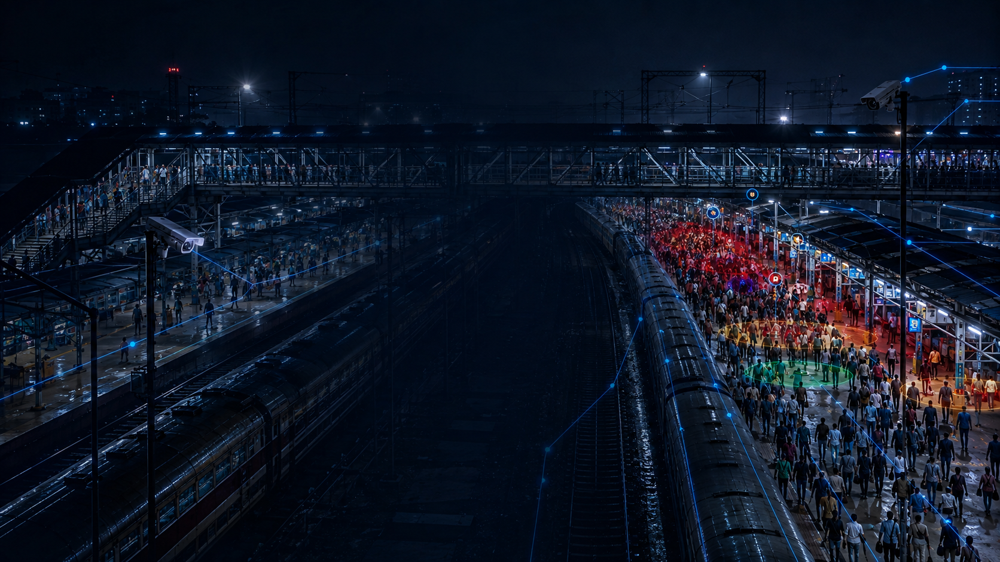
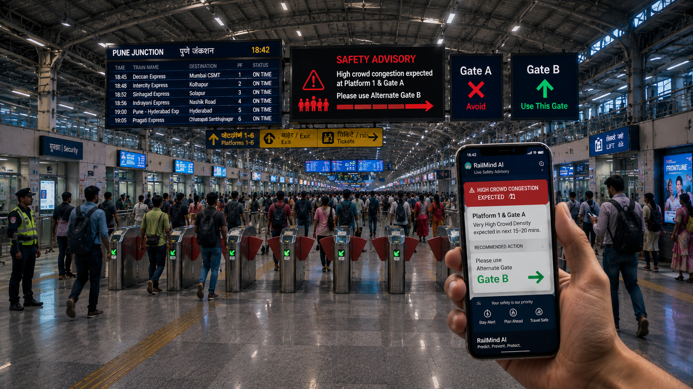
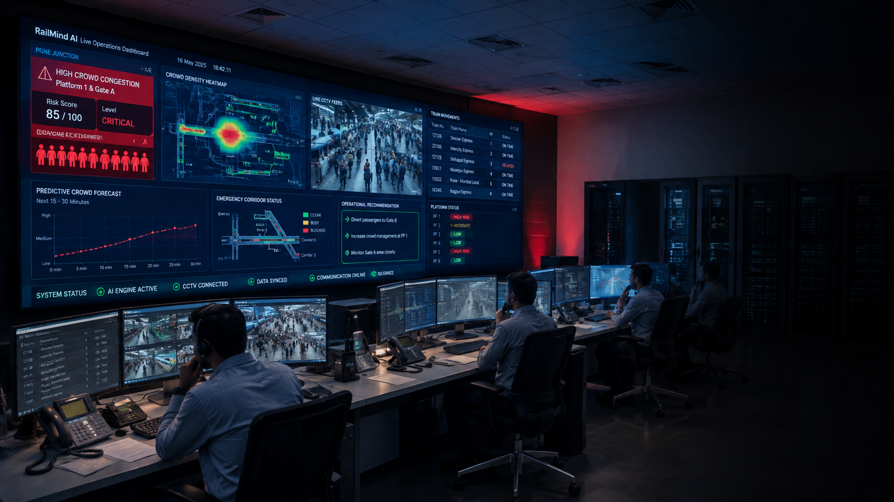
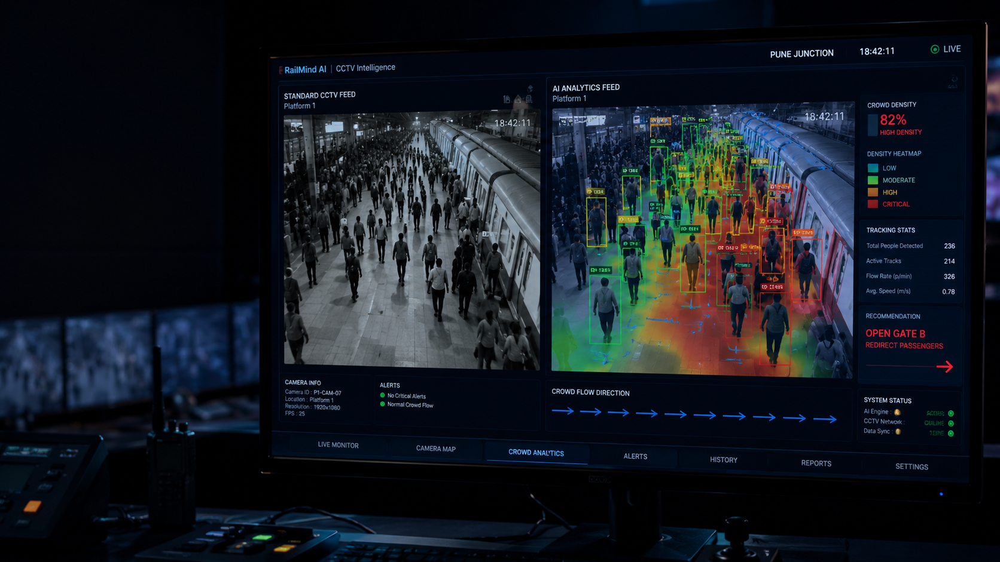
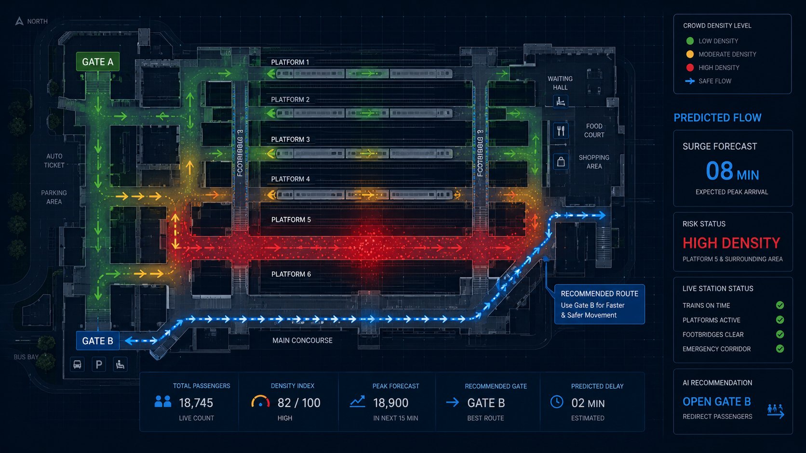

Predict Crowd Surges
Before They Become Dangerous.
RailMind AI transforms standard CCTV into a predictive intelligence engine. We detect congestion patterns, forecast risk, and provide actionable operational recommendations in real-time.
Turn Intelligence Into
Passenger Action.
Bridge the gap between data and safety. RailMind AI automatically triggers multi-channel advisories—from digital station signage to direct passenger mobile alerts—ensuring crowd flow is managed before bottlenecks occur.
- check_circle Automated Digital Signage Updates
- check_circle Direct-to-Mobile WhatsApp & SMS Alerts
- check_circle Dynamic Gate & Platform Re-routing


Empower Operators with
Predictive Clarity.
RailMind AI provides control room staff with a unified dashboard of risk. Move from reactive monitoring to proactive management with AI-driven recommendations that prioritize passenger safety.
See Beyond the
Standard Feed.
Our YOLO11-powered engine enhances existing CCTV infrastructure. By tracking individual paths and calculating density in real-time, we identify risks that human eyes might miss in crowded environments.


Visualize the
Future of Flow.
Leverage architectural heatmaps to predict surges before they happen. Our spatial analytics engine forecasts passenger density across platforms and footbridges with 15-minute lead times.
Predict the Surge. Prevent the Risk.
Join leading global transit networks utilizing RailMind AI to secure their infrastructure and protect passengers.